Henri Ruaz, sur les cimes et dans la cité
Design éditorial du livre biographique d’Henri Ruaz – chasseur alpin, résistant, guide de montagne et moniteur de ski – écrit par Nicolas Huault. Editorial design of the biographical book of Henri Ruaz – Alpine hunter (chasseurs alpins), resistance fighter, mountain guide and ski instructor – written by Nicolas Huault.
Date
― 2026
― 2026
Format
― livre édition 15,5 × 23 cm
― livre édition 15,5 × 23 cm
Technique
― impression numérique digital printing
― impression numérique digital printing
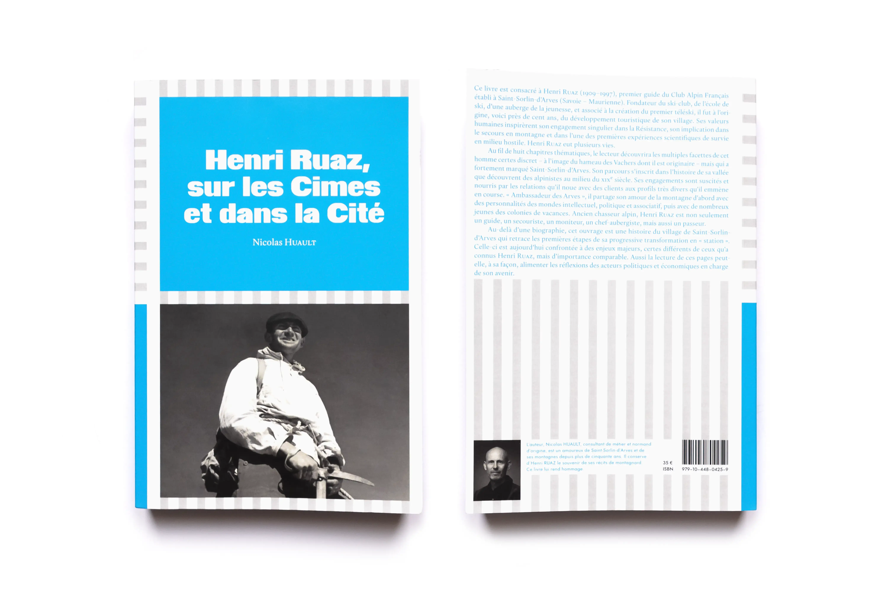
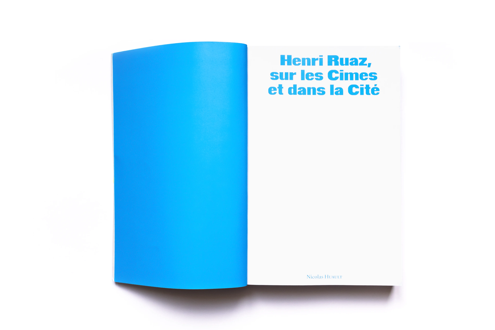
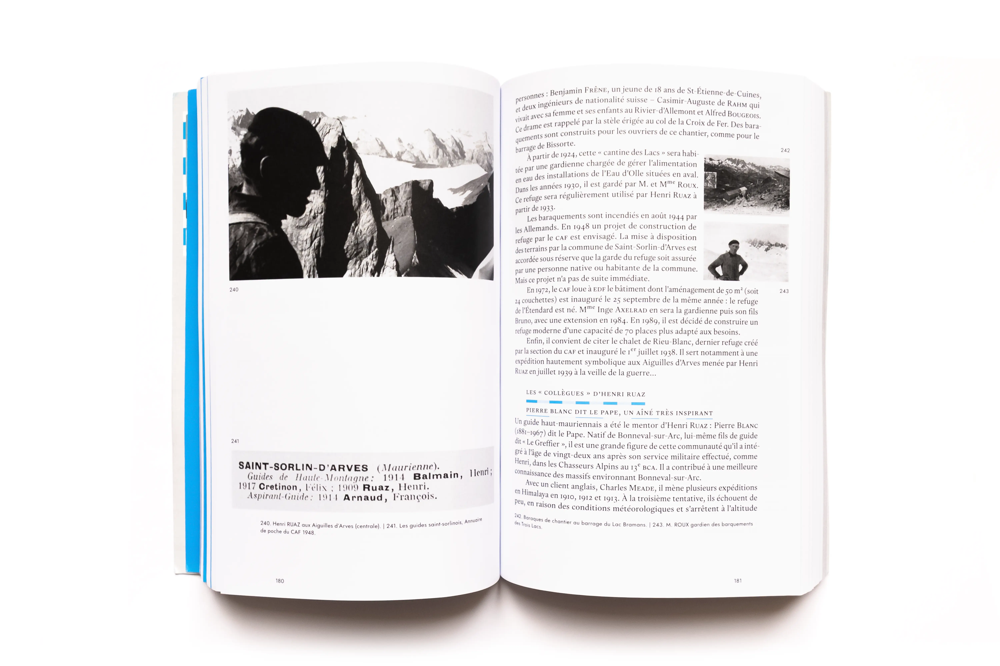
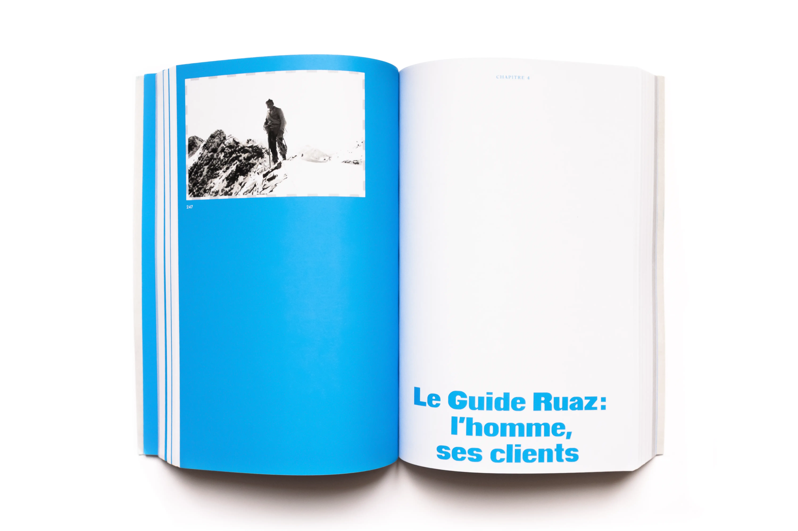
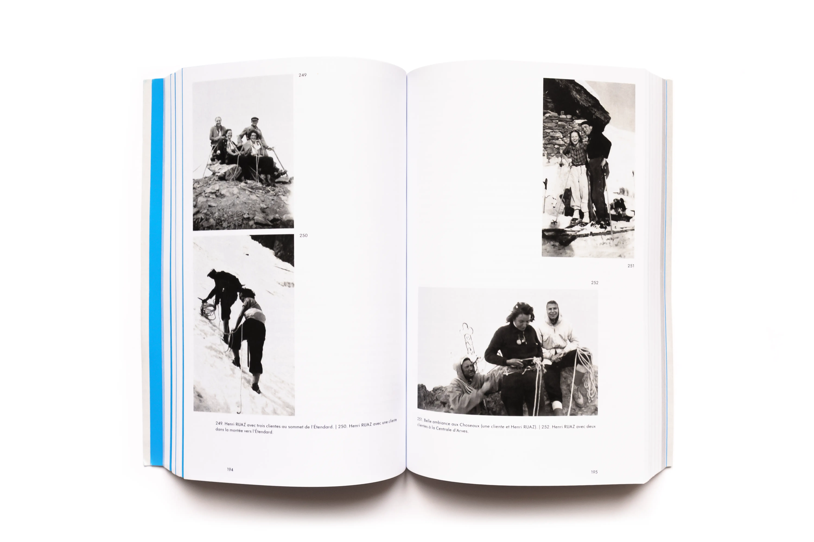
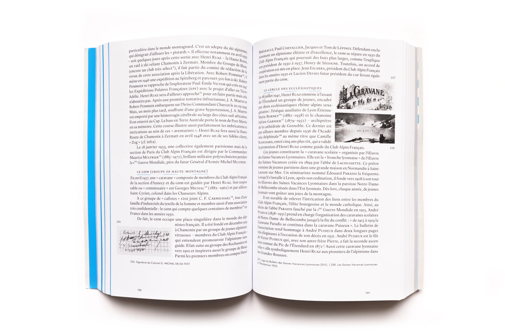
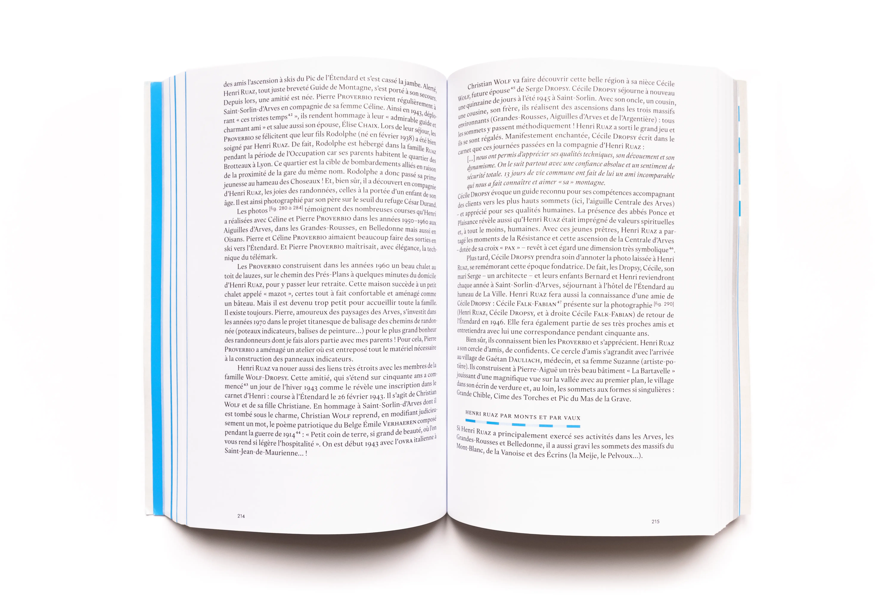
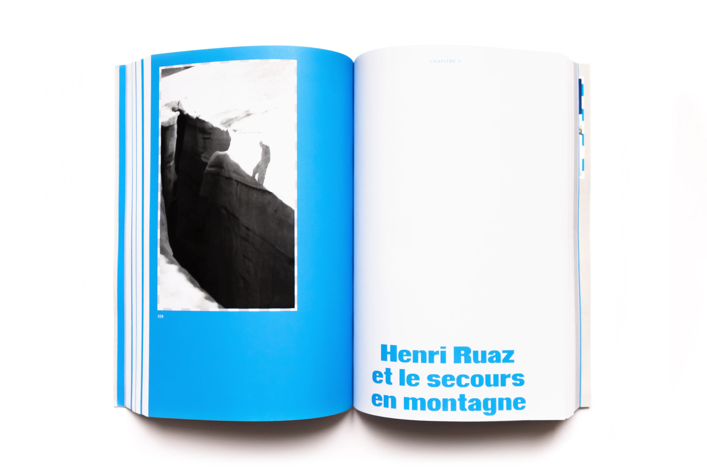
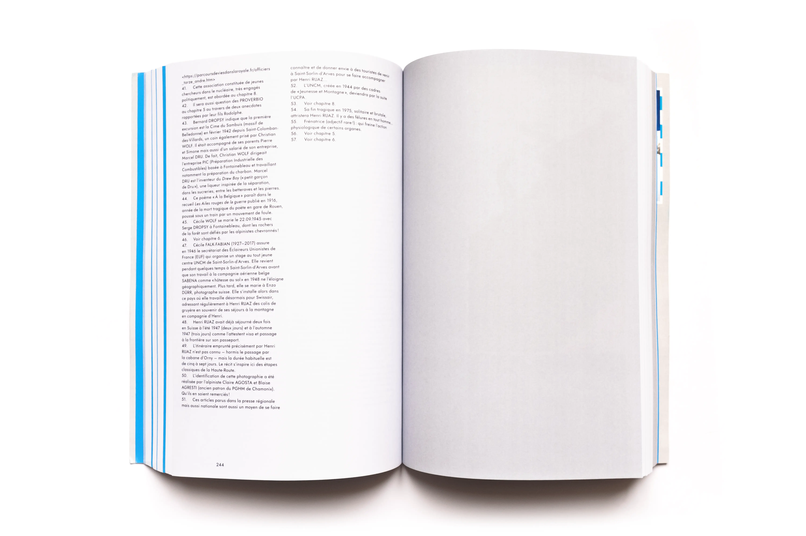
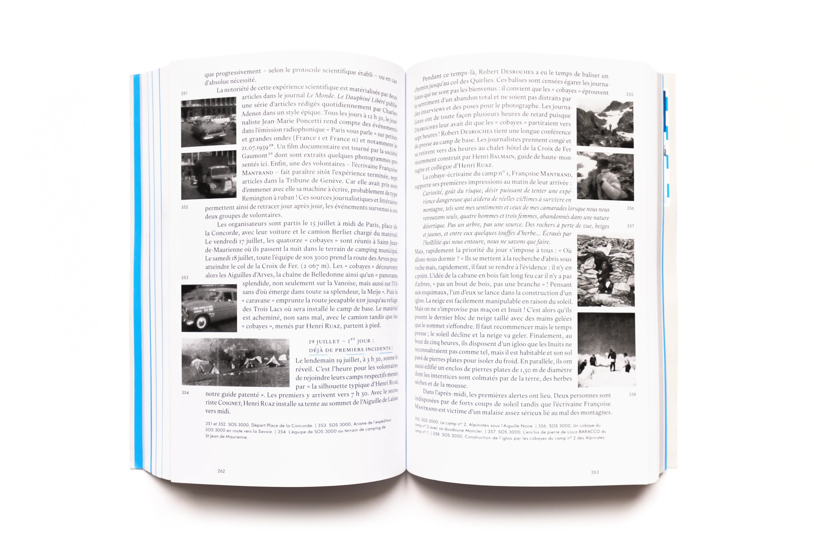
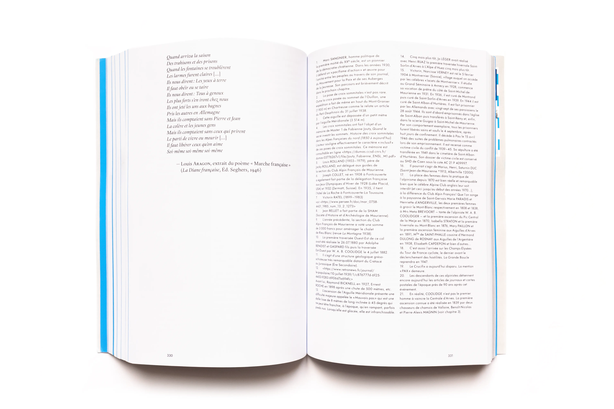